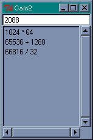
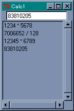
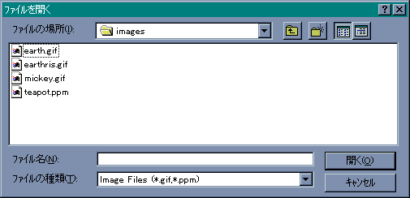
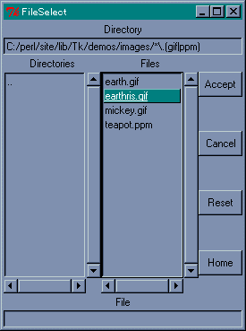

次は、リストボックスとスクロールバーというウィジェットを説明します。リストボックスは複数の文字列を表示し、ユーザーはその中からひとつ以上の文字列を選ぶことができます。スクロールバーは、ほかのウィジェットの表示範囲を制御します。例題として、calc.pl で入力した計算式をリストボックスに格納しておいて、必要なときに取り出せるように改造してみましょう。
最初にリストボックスから説明します。リストボックスはメソッド Listbox で作成します。Listbox で指定する主なオプションは、表示範囲のコントロールと選択方法です。
| -xscrollcommand | x 方向のスクロールメソッドを指定 |
| -yscrollcommand | y 方向のスクロールメソッドを指定 |
| -selectmode | セレクションモード |
-xscrollcommand/-yscrollcommand には、スクロールバーウィジェットのメソッド set を指定します。リストボックスの表示範囲が変更されたときに、指定したメソッド set が呼び出されます。これはコマンド scrollbar と一緒に説明します。セレクションには次のモードが用意されています。
-selectmode のデフォルト値は browse です。データの挿入、削除、取得は次のメソッドで行います。
このほかにもいろいろなメソッドがありますが、とくにスクロールバーに関係する xview/yview メソッドが重要です。これは、Scrollbar メソッドのところで説明します。
位置の指定には次の方法があります。
セレクションモードが extended のときにドラッグで選択した場合、最初の行が anchor で最後の行が active となります。したがって、delete に anchor と active を指定すると、選択した行をリストボックスから削除することになります。
次はスクロールバーを説明します。スクロールバーは、その両端に矢印がつき、中央付近には四角いスライダが表示されます。矢印を左クリックするか、スライダをドラッグすることで表示位置を変更します。また、矢印とスライダの隙間をクリックすると 1 画面分スクロールします。スクロールバーを作るメソッドは Scrollbar です。Scrollbar で主に使用されるオプションには次のものがあります。
| -orient | スクロールバーの方向 |
| -troughcolor | 矢印とスクロールの隙間の色 |
| -command | スクロールバーが動いたときに実行するメソッド |
-orient はスケールと同じくスクロールバーの方向を指定するもので、horizontal または h を指定すると水平になり、vertical または v で垂直になります。-command はスクロールバーを動かしたときに実行する関数を指定します。リストボックスとスクロールバーを連動させる場合、ここにはリストボックスの表示位置を制御するメソッド xview や yview を指定します。
スクロールバーで重要なメソッドは set です。
$widget->set( first, last );
set の引数 first と last は 0 から 1 の間の実数で、表示されている範囲を表しています。たとえばリストボックスと連動している場合、全体の行数が 100 行で 20 行目から 30 行分表示されているとすると、set( 0.2, 0.5 ) となります。つまり、データ全体の 20 % の位置から 50 % の位置まで表示されていることを表します。スクロールバーではこのデータからスライダの位置と大きさを調整します。
set はリストボックスのオプション -xscrollcommand や -yscrollcommand で指定します。メソッドは次の形式で指定します。
[ methodname, instance, args, ..... ]
最初にメソッド名 methodname、その次に呼び出すメソッドのインスタンス（オブジェクト）、最後に引数を指定します。これで、$instance->methodname( args, ..... ) と同じようにメソッドが呼び出されます。スクロールバーの場合は次のようになります。
-xscrollcommand => ['set', $scrollbar]
$srcollbar はスクロールバーのインスタンスです。リストボックスで表示範囲が変更されるとスクロールコマンドが実行されますが、このとき、リストボックスの表示範囲が引数として付け加えられ、メソッドが実行されます。
set はリストボックスの変更をスクロールバーに反映させるために使いましたが、スクロールバーの変更をリストボックスに反映させるためのオプションが -command です。ここにリストボックスのメソッド xview や yview を指定します。指定方法は簡単で、リストボックスのインスタンスを $listbox とすると次のようになります。
scrollbar( -orient => 'v', -command => ['yview', $listbox] );
スクロールバーの操作によって、次に示す文字列が付け加えられてコマンドが実行されます。
付け加えられるデータを無理に覚える必要はありません。また、Perl/Tk には Scrolled という便利なメソッドが用意されていて、指定したウィジェットにスクロールバーを簡単に付けることができます。標準的なスクロールバーであれば、Scrolled メソッドを知っているだけで十分です。これは最後に説明します。
それでは、calc.pl を改造しましょう。まず必要なウィジェットを生成します。
リスト : ウィジェットの生成と配置 use Safe; use Tk; $buffer = ""; # グローバル変数 $cpt = new Safe; $top = MainWindow->new(); # Entry $e0 = $top->Entry( -textvariable => \$buffer ); # Listbox $lb = $top->Listbox(); # Scrollbar $sb1 = $top->Scrollbar( -orient => 'v', -command => ['yview', $lb] ); $sb2 = $top->Scrollbar( -orient => 'h', -command => ['xview', $lb] ); # Listbox の設定 $lb->configure( -yscrollcommand => ['set', $sb1] ); $lb->configure( -xscrollcommand => ['set', $sb2] ); # grid による配置 $e0->grid( -row => 0, -columnspan => 2, -sticky => 'ew' ); $lb->grid( -row => 1, -column => 0, -sticky => 'nsew' ); $sb1->grid( -row => 1, -column => 1, -sticky => 'ns' ); $sb2->grid( -row => 2, -column => 0, -sticky => 'ew' );
-xscrollcommand / -yscrollcommand の設定にはスクロールバーのインスタンスが必要なので、スクロールバーを生成してから configure メソッドで設定します。
リストボックスとスクロールバーは grid で配置します。grid は格子状にウィジェットを配置するジオメトリマネージャです。ウィンドウを M 行 N 列のセルに分割し、そこにウィジェットを配置するのです。x 方向の位置はオプション -column で指定し、y 方向の位置は -row で指定します。
grid には pack とは違うオプション -columnspan と -rowspan があります。これは、複数のセルにまたがってウィジェットを配置するために使います。-columnspan は x 方向にまたがるセルの数、-rowspan は y 方向にまたがるセルの数を指定します。
それから、pack ではオプション -fill でウィジェットを引き伸ばすことができましたが、grid ではオプション -sticky を使います。
| n | 上寄せ |
| s | 下寄せ |
| e | 右寄せ |
| w | 左寄せ |
| ns | 上下方向に引き伸ばす |
| ew | 左右方向に引き伸ばす |
-sticky は pack のオプション -anchor と同じ機能もあわせ持っています。エントリーはいちばん上に配置しますが、-columnspan で x 方向にセルをつなげて、-sticky => 'ew' で左右に広げています。
次はバインディングを設定します。リストボックスからデータを選ぶ処理ですが、ダブルクリックしてもらうことにします。プログラムは次のようになります。
リスト : バインディングの設定
# バインディング
$e0->bind("<Return>", \&calc );
$lb->bind("<Double-1>", \&get_expr );
# 計算
sub calc {
$lb->insert( 'end', $buffer );
$lb->see( 'end' );
$buffer = $cpt->reval( $buffer );
}
# 取り出し
sub get_expr {
$buffer = $lb->get( 'active' );
}
エントリーではリターンキーが入力されたら、データをリストボックスに代入し、計算結果を $buffer にセットします。これが逆になると、答えをリストボックスに代入することになります。それから、メソッド see を使ってセットした計算式が見えるようにスクロールしています。
リストボックスでは、ダブルクリックされた位置からメソッド get でデータを取り出して buffer にセットします。ダブルクリックですから、位置の指定は active と anchor どちらでもかまいません。
 式の履歴が残るように改造した電卓いままで説明したように、スクロールバーは単独で使用されることはほとんどなく、関連付けられたウィジェットの制御に使用されます。このため、Perl/Tk には Scrolled という便利なメソッドが用意されていて、指定したウィジェットにスクロールバーを簡単に付けることができます。
$scrolled = $widget->Scrolled( widgetClass, -scrollbars => value );
たとえば、リストボックスにスクロールバーを付ける場合、widgetClass には 'Listbox' を指定します。オプション -scrollbars には、スクロールバーを付ける方向を指定します。n (上), s (下), e (右), w (左) で、se と指定すれば下と右の 2 か所にスクロールバーを設置することができます。Scrolled メソッドを使うと、プログラムは次のように簡単になります。
リスト : Scrolled メソッドの使用例
use Safe;
use Tk;
$buffer = ""; # グローバル変数
$cpt = new Safe;
$top = MainWindow->new();
# Entry
$e0 = $top->Entry( -textvariable => \$buffer );
$e0->bind("<Return>", \&calc );
$e0->pack();
# Scrolled
$l0 = $top->Scrolled('Listbox', -scrollbars => 'se' );
$l0->bind("<Double-1>", \&get_expr );
$l0->pack();
# 計算
sub calc {
$l0->insert( 'end', $buffer );
$l0->see( 'end' );
$buffer = $cpt->reval( $buffer );
}
# 取り出し
sub get_expr {
$buffer = $l0->get( 'active' );
}
MainLoop();
Perl/Tk の場合、スクロールバーについては Scrolled メソッドを知っておけば十分だと思います。
 Scrolled メソッドを使用した場合今度は画像の取り扱いについて説明しましょう。以前の Tk では、白黒のビットマップしか扱えませんでしたが、ver 4.0 以降の Tk では標準でカラーイメージをサポートし、GIF や PPM / PGM 形式の画像ファイルを扱うことができるようになりました。PPM はカラー、PGM はグレイスケールの画像を扱う、UNIX で標準的に用いられるベタフォーマットです。
Perl/Tk では、メソッド Bitmap または Photo でイメージを作り出し、そのイメージをラベルやボタンなどのウィジェットに使うことができます。Bitmap は白黒のビットマップ、Photo はカラーイメージを生成します。たとえば、画像ファイルからイメージを作るには、次のように行います。
リスト : 画像の表示 use Tk; $top = MainWindow->new(); $image = $top->Photo( -file => 'earthris.gif' ); $top->Label ( -image => $image )->pack(); MainLoop();
Photo メソッドは、画像を表すインスタンスを返します。オプション -file は、読み込む画像ファイルを指定 [*1] します。earthris.gif は Perl/Tk 配布パッケージ demos/images 内の画像ファイルです。生成した画像は、次のメソッドを利用することができます。
| delete | イメージを削除する |
| imageTypes | 指定可能な種別のリストを返す |
| imageNames | 全イメージの名前をリストにして返す |
| type | イメージの種別を返す |
| height | イメージの高さを返す |
| weight | イメージの幅を返す |
ラベルやボタンにイメージを表示するには、オプション -image に画像のインスタンスをセットします。-image はメソッド Photo で作成した画像のオプションで、メソッド Bitmap で作成した画像はオプション -bitmap にセットしてください。これでラベルにイメージが表示されます。
それでは簡単な例題として、GIF / PPM の画像を表示するプログラムを作ります。このようなアプリケーションの場合、ファイルの指定方法が GUI らしくないとボロクソにいわれるものですが、幸いなことに Tk にはファイルを選択するためのメソッドが用意されています。
getOpenFile 入力ファイルを選択 getSaveFile 出力ファイルを選択
Tcl/Tk の場合は名前の前に 'tk_' がつきます。これらのメソッドを実行すると、ファイル選択のウィンドウ(ダイアログ)が開かれ、ウィンドウ上の操作でディレクトリをたどり、ファイルを選ぶことができます。使用できるオプションは次の通りです。
このなかで重要なオプションが -filetypes です。アプリケーションで扱うことができるファイル種別を拡張子で指定し、そのファイルだけを表示します。指定は無名の配列で行います。
-filetypes => [ファイル種別, ... ] ファイル種別 := [名前, [拡張子, ...]]
たとえば、GIF/PPM ファイルを指定する場合は、次のようになります。
-filetypes => [ ['Image Files', ['.gif', '.ppm']] ]
この場合は GIF と PPM ファイルが一緒に表示されます。次のように指定すると、表示するファイルをダイアログの操作で切り替えることができます。
-filetypes => [ ['GIF Files', '.gif'], ['PPM Files', '.ppm'], ['ALL Files', '*'] ]
指定する拡張子がひとつしかない場合は、無名の配列を使う必要はありません。すべてのファイルを表示する場合は * を使います。また、空文字列 "" を指定すると、拡張子のないファイルを表示します。ファイルを選択すると、ファイル名をフルパス形式で返します。選択しない（キャンセル）場合は、空文字列が返されます。
それでは、GIF / PPM 画像ローダーを作りましょう。まず、メニューとラベルを設定します。
リスト : GIF/PPM ローダー (1) use Tk; use File::Basename; $top = MainWindow->new(); $m = $top->Menu( -type => 'menubar' ); $top->configure( -menu => $m ); $m1 = $m->cascade( -label => 'File', -under => 0, -tearoff => 0 ); $m1->command( -label => 'Open', -under => 0, -command => \&load_file ); $m1->separator; $m1->command( -label => 'Exit', -under => 0, -command => \&exit ); $image_data = $top->Photo( -width => 64, -height => 64 ); $label = $top->Label( -image => $image_data )->pack(); $path_name = ""; # パスを格納する変数
メニュー File の下に、ファイルを選択する Open とアプリケーションを終了する Exit の 2 つのメニューを設定します。次に、イメージとグローバル変数を定義します。$path_name は選択されたファイルのパスを格納しておきます。メソッド getOpenFile にこのパスを指定することで、次にファイルを選ぶときは同じディレクトリから始めることができます。アプリケーションの開始時にはファイルは指定されていないので、空のイメージを作って表示しておきます。あとは、画像ファイルをロードする本体を作ります。
リスト : GIF/PPM ローダー (2)
# ファイルを選んで表示する
sub load_file {
my $filename = $top->getOpenFile( -filetypes => [['Image Files', ['.gif', '.ppm']]],
-initialdir => $path_name );
if( $filename ){
$path_name = dirname( $filename ) . '/';
$image_data->delete;
$image_data = $top->Photo( -file => $filename );
$label->configure( -image => $image_data );
}
}
getOpenFile でファイル名を取得したら、関数 dirname でパスを取り出して $path_name にセットします。dirname は File::Basename モジュールの関数で、ファイル名からパス部分を取り出して返します。
ファイル名をゲットしたら、それが空文字列でないことを確認します。次に、表示しているイメージを delete で削除してから、新しいイメージを Photo で生成します。最後に、ラベルの configure で表示するイメージを変更します。とても簡単ですね。
 表示する GIF ファイルの選択ところで、M.Hiroi が使っている Tk.pm Version 800.022 では、オプション -initialdir が正常に動作しないようです。-initialdir にパスを指定しても、カレントディレクトリのファイルが表示されます。Tcl/Tk では、これでうまく動作したのですが、もしかすると M.Hiroi のプログラムに間違いがあるかもしれません。お気づきの点がありましたら、お知らせくださいませ。
オプション -initialdir にパスを指定する場合、パス区切り記号をスラッシュ ( / ) ではなくバックスラッシュ ( \ ) に変換すると正常に動作します。この方法は、わたわたさん (Guest Book No.315) に教えてもらいました。わたわたさん、ありがとうございます。
具体的には、次のように tr で変換すると簡単です。
$path_name = dirname( $filename ) . '/'; $path_name =~ tr/\//\\/; $image_data->delete;
M.Hiroi は Tk.pm Version 800.023 で正常に動作することを確認しました。
Perl/Tk の場合、ファイルの選択には getOpenFile のほかにも FileSelect ウィジェットがあります。FileSelect はファイルを選択したディレクトリを記憶しているので、プログラムでパスを保存しておく必要はありません。このウィジェットは、ラベル、ボタン、リストボックスなどのウィジェットを組み合わせて作られていて、モジュール Tk::FileSelect をロードするだけで簡単に使うことができます。プログラムは次のようになります。
リスト : FileSelect メソッドを使う
use Tk;
use Tk::FileSelect;
$top = MainWindow->new();
$m = $top->Menu( -type => 'menubar' );
$top->configure( -menu => $m );
$m1 = $m->cascade( -label => 'File', -under => 0, -tearoff => 0 );
$m1->command( -label => 'Open', -under => 0, -command => \&load_file );
$m1->separator;
$m1->command( -label => 'Exit', -under => 0, -command => \&exit );
$image_data = $top->Photo( -width => 64, -height => 64 );
$label = $top->Label( -image => $image_data )->pack();
$fs = $top->FileSelect( -directory => 'C:/perl/', -filter => '*\.(gif|ppm)');
# ファイルを選んで表示する
sub load_file {
my $filename = $fs->Show();
if( $filename ){
$image_data->delete;
$image_data = $top->Photo( -file => $filename );
$label->configure( -image => $image_data );
}
}
まず FileSelect ウィジェットを作成します。オプション -directory は、最初に表示するディレクトリを指定します。デフォルトはカレントディレクトリです。オプション -filter は、選択するファイルを指定します。ここに正規表現を指定すると、それとマッチするファイル名が表示されます。glob 形式のワイルドカードが使えるかどうかは未確認です。
作成したウィジェットは pack してはいけません。メソッド Show を使ってウィンドウを表示します。Show は選択したファイル名をフルパス形式で返します。キャンセルした場合は undef (未定義) を返します。FileSelect は、もっと複雑な使い方もできるようです。まあ、ファイルを選択するだけならば、これでも十分に使うことができます。
 FileSelect を使った場合